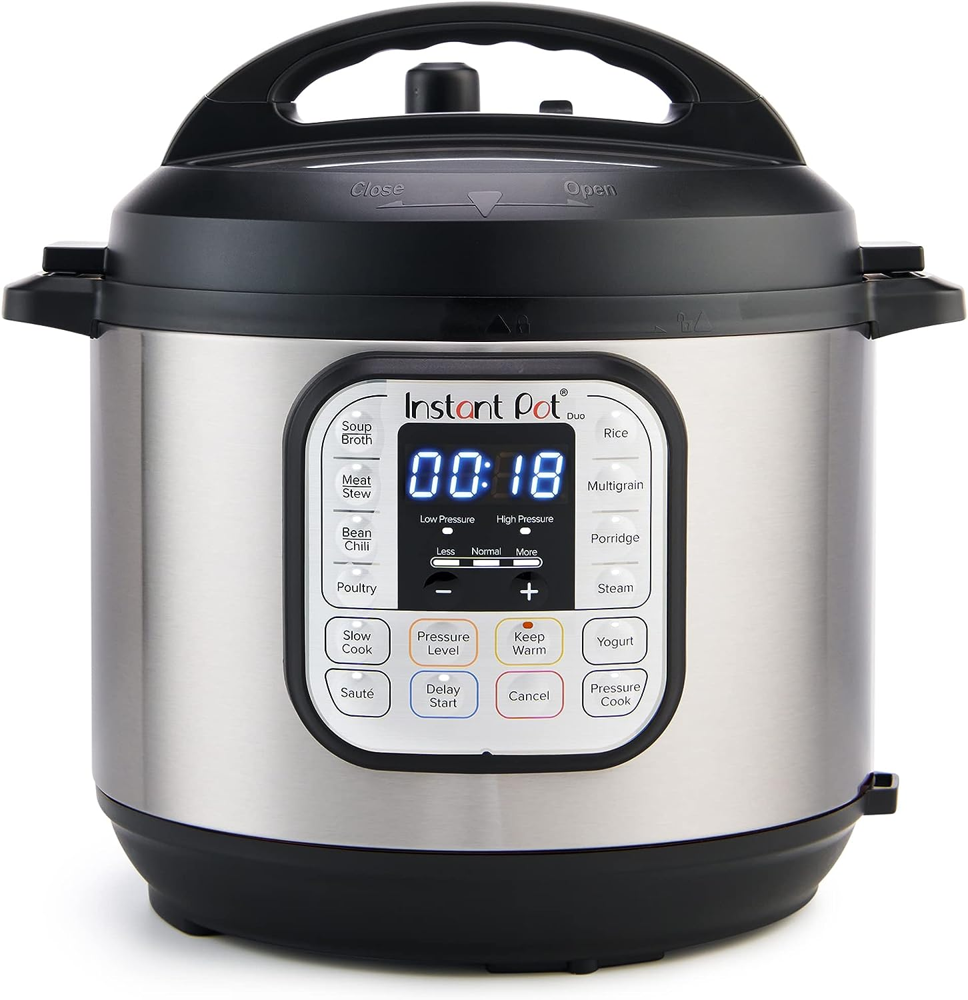

My only experience with pressure cookers have been with the Instant Pot.
I regulalry run into problems with stovetop cooking. Food falling into that little hole with the gas burner. Or have something spill over and adding more work to the cleanup. Now I only have the Instant Pot to clean which is easier for me. Because of the Sautee functionality, I also use it for regular stove-top stuff like stir-fry because I can finally stir stuff without worrying about food popping out and creating a mess.
With the timer, I pretty much just set and forget. Taking naps, focusing on my next coding project, counting the ceiling tiles, etc. There is nothing for me to maintain. Nothing to stir, or regulalry check up on. Sometimes I even forget that something is cooking in there until I get hungry and wonder what is available.
